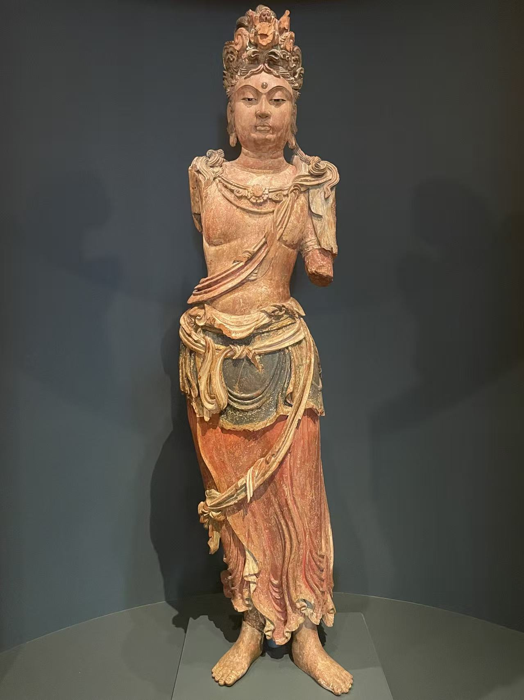
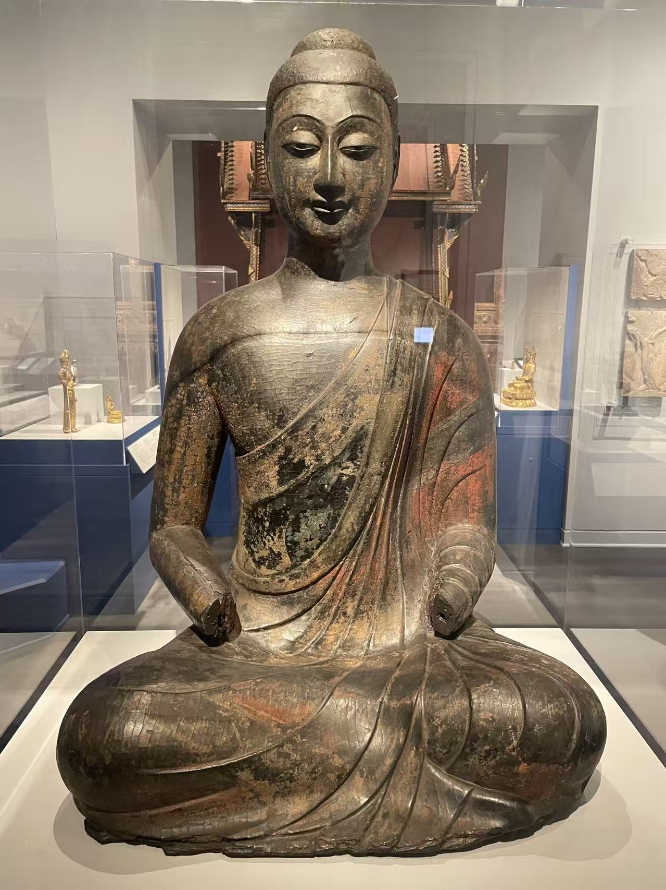

MUSEUM NOTES / CHINESE BUDDHIST ART
中国佛教艺术
把值得反复看的作品聚在一起，
一个主题，一个主题地整理。
SCULPTURE NOTEBOOKS
造像 · 四个专题

12 件作品
水月观音
把看过的水月、南海与自在坐观音放到一起。从夏威夷到波特兰，从木色、石面到金漆，同一个姿态有许多种样子。
走进这一辑 →
13 件作品
五代至元木雕
从五代、宋辽金看到元代，收在一起看菩萨、观音与罗汉。同期的水月观音另有专题；隋代佛像与明代侍童也作为前后参照留下。
走进这一辑 →
8 件作品
干漆与漆塑造像
从沃尔特斯的隋代木胎漆佛，到唐代夹纻干漆、观音与元代漆塑。把佛与菩萨的身份、木胎与脱胎的工艺，逐件分清。
走进这一辑 →
4 件作品
易县三彩罗汉
巴黎、堪萨斯城、纽约。把四尊三彩罗汉放到一起，先看眉眼与手势，再看它们离开原来环境之后的故事。
走进这一辑 →BUDDHIST PAINTING